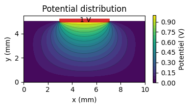

Problème de Laplace (TP2)#
Projet du groupe de TP2
- SP1 : 3 personnes
- SP2, SP3, SP4 : 4 personnes
Encadrant : J. Scola
Ce projet s’inscrit dans l’analyse des résultats d’expérience de mesures électriques à l’échelle nanométrique (conductive AFM) menées au laboratoire GEMaC.

La géométrie de la mesure impose une distribution inhomogène du champ électrique induit par la différence de potentiel appliquée entre les électrodes. De ce fait, la relation entre la résistance mesurée et la résistivité intrinsèque du matériau dépend non seulement des dimensions de l’échantillon mais également du détail de la configuration de mesure qui détermine la distribution de champ électrique.
Le but de ce projet est de déterminer numériquement la distribution de champ électrique dans un matériau isolant en présence d’électrodes métalliques imposant localement un potentiel électrique à la surface du matériau. Le champ électrique dans le matériau est calculé à partir de la distribution dans le plan \((x, z)\) du potentiel \(V\) par résolution de l’équation de Laplace \(\Delta V = 0\). La figure ci-dessous illustre la distribution de potentiel dans le système de référence : un isolant à la surface duquel une électrode impose un potentiel constant; ce système est invariante suivant \(y\) et symétrique par rapport à un plan \((y, z)\).

La solution du problème réel n’étant pas accessibles par le calcul analytique, il doit être approché par des méthodes numériques. Le résultat final devra être réalisé par la mise en oeuvre de deux méthodes numériques distinctes, et appliquées sur un système de référence pour lequel une approximation analytique existe. Ces solutions analytiques serviront à valider les résultats des deux méthodes numériques.
Compte tenu de l’étendue et de la variété du travail demandé, les tâches du projet sont décomposées en 4 sous-projets à traiter en parallèle par équipes de 4.
Décomposition du projet en sous-projets#
SP1 - Calcul de solutions analytiques (3 personnes)#
position du problème depuis les équations de Maxwell jusqu’à la formulation canonique (\(\Delta V = 0\) dans \(\Omega\))
formulation de Feynman du problème 2D
résolution dans des configuration dans des configurations simplifiés (2D, hautes symétries) dont le système de référence
représentations graphiques des solutions avec
matplotlib
SP2 - Méthode des différences finies (DF) : analyse du schéma numérique (4 personnes)#
coordination avec l’autre équipe DF
construction du schéma numérique avec conditions limites mixtes (formules de dérivation numérique)
étude de la stabilité et robustesse du schéma numérique et calculs de complexité numérique
comparaison des performances des techniques de résolution du problème linéarisé (Gauss Seidel, Jacobi, Cholesky, etc.)
SP3 - Méthode des différences finies : implémentation du schéma numérique dans des configurations 2D et 3D (4 personnes)#
coordination avec l’autre équipe DF
utilisation de la librairie
numpydéfinition des conditions limites
validation sur le système de référence
étude de l’erreur numérique
SP4 - Méthode des éléments finis : adaptation d’un code existant dans les configurations 2D et 3D (4 personnes)#
utilisation d’un code réalisé par un tiers (fonctionnement en boite noire)
construction de maillages
définition des conditions limites
validation sur le système de référence (et comparaison empirique des solveurs de la librairie)
étude de l’erreur numérique
Déroulement du projet#
Traitement complet du système de référence par les 4 sous-projets est attendue sous la forme d’un rapport au format notebook pour la semaine du \(\color{red}27 \, \mathrm{mars}\). Une séance de travail réunissant les 4 équipes sera organisée dans la deuxième quinzaine de mars afin de croiser les résultats des 4 équipes et valider les méthodes numériques. Ensuite, la seconde partie du projet sera alors consacrée à l’étude de cas réels (pavé massif, film mince, empilement multi-couches, diverses configurations d’électrodes) par les deux méthodes numériques. Les équipes seront éventuellement redéfinies afin que les équipes SP1 et SP2 puissent se joindre à ce travail. Les études de cas seront décrits dans des rapports individuels et leurs résultats ajoutés aux rapports intermédiaires pour constituer un seul document cohérent à rendre au plus tard la veille de la soutenance qui se déroulera vendredi 29 mai à 9h40, amphi F.